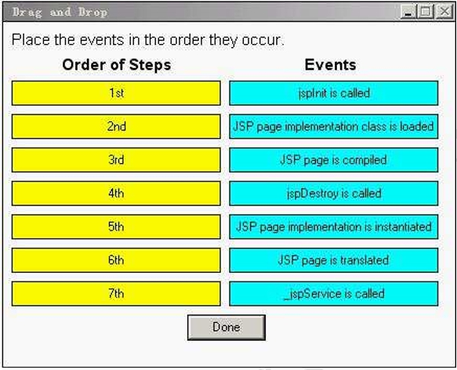

1~5
1.To take advantage of the capabilities of modern browsers that use web standards, such as XHTML and CSS, your web application is being converted from simple JSP pages to JSP Document format. However, one of your JSPs, /scripts/screenFunctions.jsp, generates a JavaScript file. This file is included in several web forms to create screen-specific validation functions and are included in these pages with the following statement:
10. <head>
11. <script src='/scripts/screenFunctions.jsp'
12. language='javascript'
13. type='application/javascript'> </script>
14. </head>
15. <!-- body of the web form -->
Which JSP code snippet declares that this JSP Document is a JavaScript file?
A. <%@ page contentType='application/javascript' %>
B. <jsp:page contentType='application/javascript' />
C. <jsp:document contentType='application/javascript' />
D. <jsp:directive.page contentType='application/javascript' />
E. No declaration is needed because the web form XHTML page already declares the MIME type of the /scripts/screenFunctions.jsp file in the <script> tag.
2.Given the JSP code:
10. <html>
11. <body>
12. <jsp:useBean id='customer' class='com.example.Customer' />
13. Hello, ${customer.title} ${customer.lastName}, welcome
14. to Squeaky Beans, Inc.
15. </body>
16. </html>
Which three types of JSP code are used? (Choose three.)
A. Java code
B. template text
C. scripting code
D. standard action
E. expression language
3.You have built a collection of custom tags for your web application. The TLD file is located in the file: /WEB-INF/myTags.xml. You refer to these tags in your JSPs using the symbolic name: myTags. Which deployment descriptor element must you use to make this link between the symbolic name and the TLD file name?
A.
<taglib>
<name>myTags</name>
<location>/WEB-INF/myTags.xml</location>
</taglib>
B.
<tags>
<name>myTags</name>
<location>/WEB-INF/myTags.xml</location>
</tags>
C.
<tags>
<tags-uri>myTags</taglib-uri>
<tags-location>/WEB-INF/myTags.xml</tags-location>
</tags>
D.
<taglib>
<taglib-uri>myTags</taglib-uri>
<taglib-location>/WEB-INF/myTags.xml</taglib-location>
</taglib>
答案：D
備註：在JSP2.0之前，必須在部署描述檔中指明TLD的<uri>及TLD檔實際位置的對映關係(稱為Taglib Map)，例如
當在JSP頁面中具有如下taglib指令時
<%@ taglib prefix="hello" uri="randomThings">
需要在部署描述檔中設定
<web-app>
...
<jsp-config>
<taglib>
<taglib-uri>randomThings</taglib-uri>
<taglib-location>/WEB-INF/myFunctions.tld</taglib-location>
</taglib>
</jsp-config>
</web-app>
在JSP2.0之後，此設定不再是必要，Container會自動建立從TLD檔到<uri>名稱的對應，只要把TLD檔放在Container會去找的某個位置，Container就會找到它，並自動為標籤函式庫建立對映關係。但如果部署描述檔有做上面的設定，Container會優先採用
相關說明：
Head First Servlets&JSP ch9 使用JSTL(p.485)
4.Which implicit object is used in a JSP page to retrieve values associated with <context-param> entries in the deployment descriptor?
A. config
B. request
C. session
D. application
5.Click the Task button.
Place the events in the order they occur.

答案：
1st─JSP page is tranlated
2nd─JSP page is compiled
3rd─JSP page implementation class is loaded
4th─JSP page implementation class is instantiated
5th─jspInit is called
6th─_jspService is called
7th─jspDestroy is called
備註：這題在問JSP的生命週期
相關說明：
講義 ch9(p.155)
Head First Servlets&JSP ch7 使用JSP(p.306)
Servlet&JSP教學手冊 ch6 使用JSP(p.6-2)
猛虎出閘尊爵版 ch8 JSP技術模型(p.8-9)